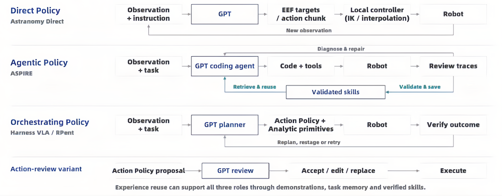

机器人操作路线导读
GPT 怎样控制机械臂？
同一句“把罐子放进箱子”，Astranomy 让 GPT 给出夹爪接下来要走的位姿；ASPIRE 让代理编写调用机器人 API 的程序，抓空后还能回看执行记录、修订程序。两条路线都能闭环，但决定下一步动作的位置不同。
从末端动作读起两条主线
Direct Policy · 直接动作Direct Policy：GPT 直接给出末端动作比较 GPT 生成轨迹函数、给出一串位姿或每次只给一个目标时的反馈时机。Agentic Policy · 程序与工具Agentic Policy：模型调用工具，也能写程序比较技能选择、单步调用和代码生成，追踪错误目标是在哪一步绑定的。
抓空以后，下一步怎么来？
直接策略从新图像和实测位姿重新给出一段末端目标。工具代理可以再次查询罐子的位置，或让已有程序执行重观察分支。ASPIRE 还会回看失败记录、修改程序、验证并保存技能。分清两条路线，先看模型把几何坐标交给控制器，还是把一次调用或一段程序交给执行环境。


研究博客 · 让 GPT 怎么动手？Piper 真机实验理想稿
Agentic Policy 项目章 · 项目实录 · Piper 与 TERM